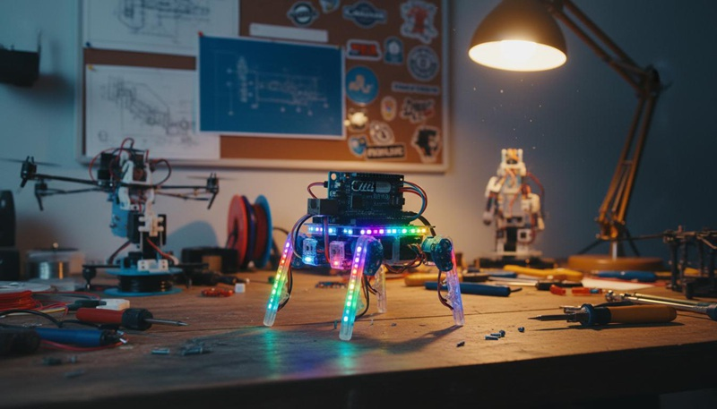
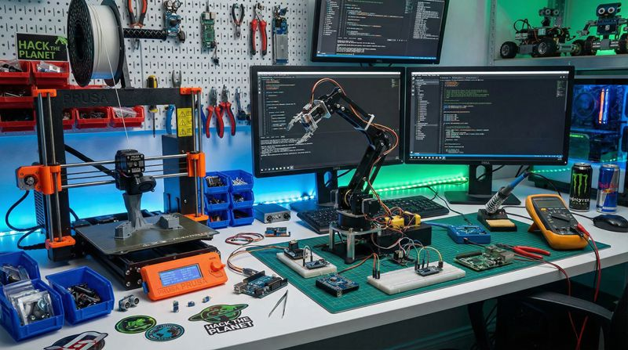

返回课程列表
第一课
绪论
极客发明与力学思维
⏱️ 约30分钟
从手工耿的脑洞发明到稚晖君的精密机器人，从何同学的科技测评到各种DIY项目——每一个极客作品都蕴含着力学智慧。
极客精神与力学基础
极客制造的核心是将创意变为现实。无论是3D打印、CNC加工还是电子制作，都需要力学知识来确保作品能够正常工作。

知名极客的力学应用
极客创作者的力学智慧：
- 稚晖君：自制机械臂需要精确的运动学逆解和动力学控制
- 手工耿：看似无用的发明其实包含精妙的力学设计
- 何同学：科技产品测评中经常涉及力学性能分析
- 各种DIY：自制电动车、无人机、机器人都需要力学计算
从创意到实现的力学流程
一个极客项目从构思到完成，需要经历概念设计、力学分析、材料选择、加工制造和测试调整等步骤。力学分析是确保项目成功的关键。

极客项目的力学设计流程
DIY项目的力学考量：
- 概念验证：用简单计算验证创意是否可行，如承载力是否足够
- CAD建模：使用SolidWorks等软件进行3D建模和应力分析
- 材料选择：PLA、ABS、金属、碳纤维各有优缺点
- 原型测试：制作原型进行实际测试，验证力学计算的准确性